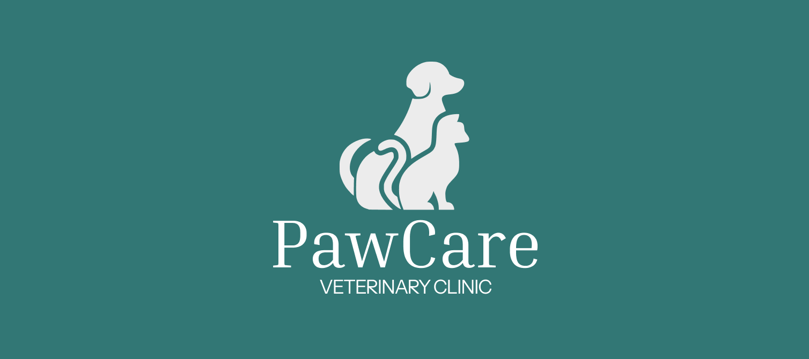
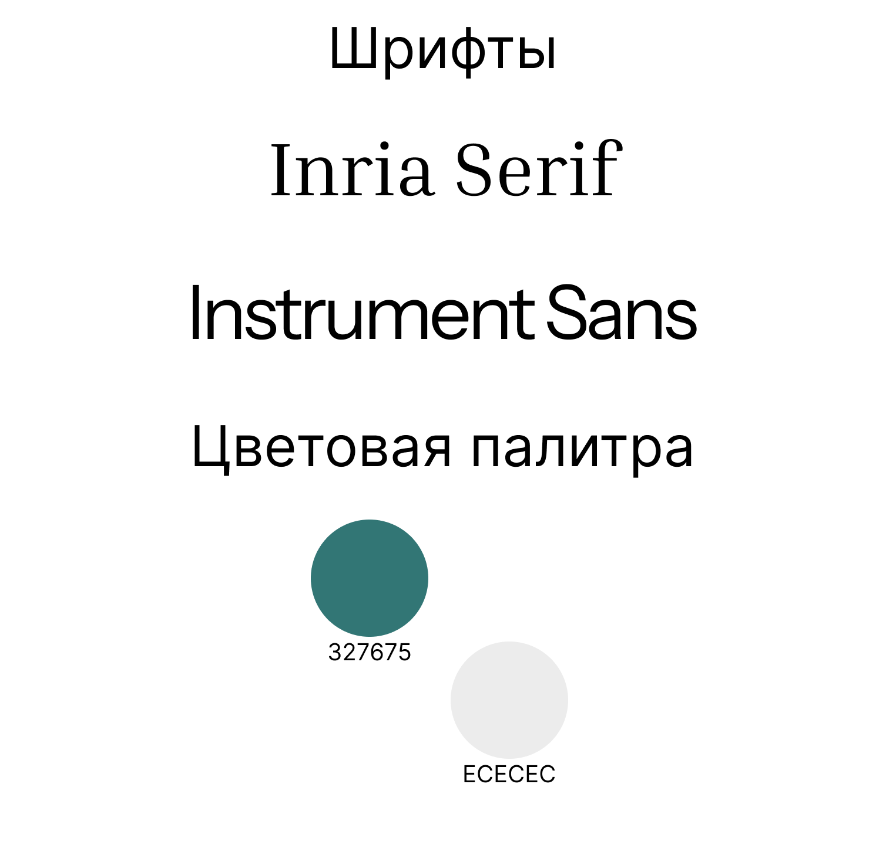
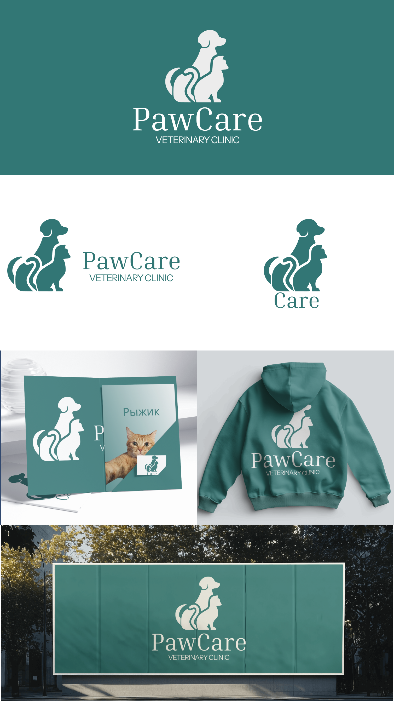

PawCare Veterinary Clinic
Логотип и фирменный стиль ветеринарной клиники PawCare.

- Клиент
- PawCare — ветеринарная клиника
- Задача
- Разработать айдентику ветеринарной клиники PawCare: логотип, знак, фирменную палитру и шрифтовую пару, а также показать применение на носителях — карте пациента, худи персонала и наружной вывеске, в позитивном и инверсном исполнении.
- Роль
- Графический дизайнер: логотип, силуэтный знак собаки и кошки, фирменная палитра, шрифтовая пара, сборка мокапов применения.
Ветклиники в логотипах обычно разъединяют животных или сводят их к иконке лапы. Здесь собака и кошка собраны в один непрерывный силуэт: сидящий пёс сзади, кошка перед ним, их хвосты и спины перетекают друг в друга, поэтому знак читается как «двое под одной опекой», а не как две отдельные пиктограммы. Форма сплошная, залитая, без внутренних линий — она одинаково узнаётся и белой на зелёном, и зелёной на белом, и в мелком размере на кармане худи.
Палитра держится на одном характерном цвете — спокойном бирюзово-зелёном 327675 — и светло-сером ECECEC как втором тоне: зелёный отвечает за медицинскую надёжность, но за счёт тёплого оттенка не выглядит холодно-клиническим. Логотип набран засечным Inria Serif с широкой разрядкой, служебные подписи — гротеском Instrument Sans; засечный шрифт добавляет доверия и «взрослости», гротеск держит читаемость на мелких носителях вроде карты пациента.


Айдентика собрана вокруг одного силуэта и одного цвета, поэтому легко переносится с носителя на носитель: логотип работает и разворотом на карте пациента, и крупным знаком на спине худи персонала, и наружной вывеской, а в тесных форматах сворачивается до знака с сокращением «Care».